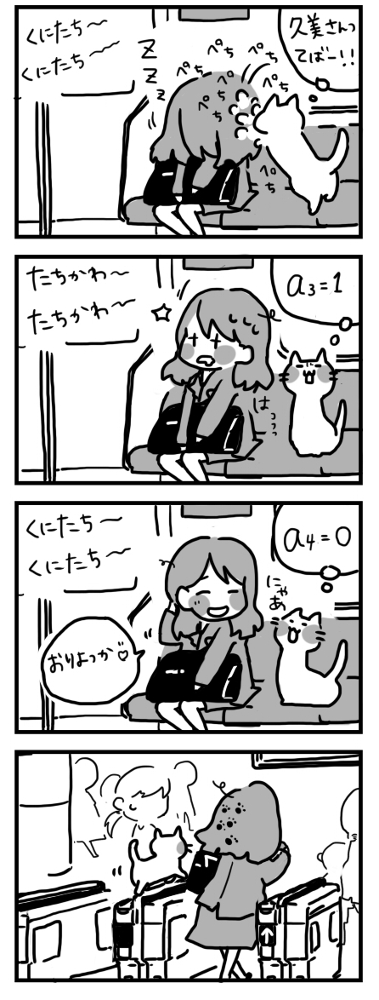
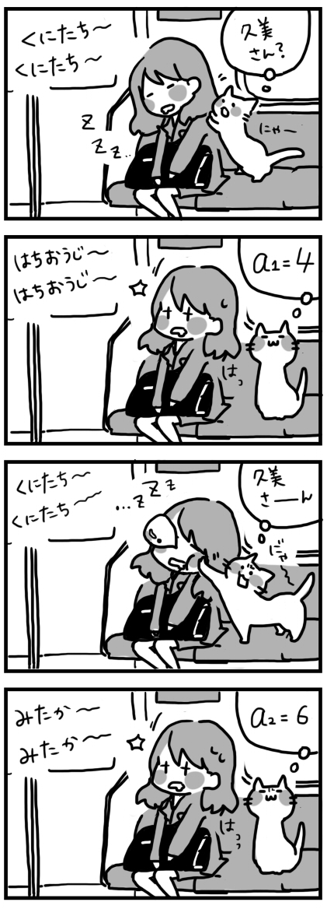
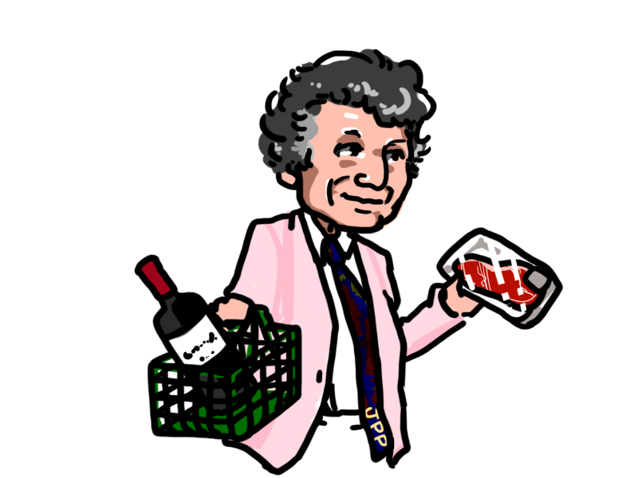

T市での去年のゴールデン・ウィークの「おだんご」の需要，供給は以下の$1$次関数であった． ただし $p$ がおだんごの価格，$q$ が売上量である．このときマーシャルの罠に落ちないように気をつけながら， 需要曲線 $q=D(p)$ および，供給曲線 $q=S(p)$ を $qp$ 平面上に図示しなさい．また，市場均衡を求めなさい．
\[ \begin{array}{c@{ \;}c@{ \;}ll} D(p)&=& \displaystyle 40-2p& \cdots \quad 需要 \quad (1) \\[2mm] S(p)&=& \displaystyle 2p & \cdots \quad 供給 \quad (2) \end{array} \]製薬会社とT大は共同開発したサプリメント『$\heartsuit$T大チューリップちゃん』を大学発ブランドとして売り出した．需要関数は \[ q=D(p)=500-\frac{1}{2}p \] で与えられている．また費用は$1$箱あたり$400$円であるとする． 利潤を最大にするためには，何円で売ればよいか，横軸切片を使って調べなさい．
（１）徹夜で仕事をした久美さんは，国立駅で降りるところを八王子まで行き，折り返しても三鷹まで行き，立川まで行き，$4$度目でやっと国立で下車した．$t$ 回目に寝過ごした駅数を $a_t$ とする．また，$t$ 回目に寝過ごした時間（分）を $b_t$ とする． $a_t$ と $b_t$ はどのような値になるだろうか？ただし，沿線のJRの駅と各駅間の所要時間は以下の通りである．
|  |  |
|---|
（２）利子率を$r=0.05$とする．毎年，$100$万円を積み立てて預け入れる．$10$年目に預け入れた直後の時点での口座残高を求めなさい．
（１）次の関数を微分しなさい．
（２）Y$\heartsuit$RIK$\heartsuit$は，夏休みにバイトで$18$万円をかせいだ（よくやった）． このうち今年は $x$ 円を使い，$s$ 円を貯金する．来年は利息でふくらませた残高 $y$ 円を使おうと考えている． Y$\heartsuit$RIK$\heartsuit$の満足度 $u$ は積 $u = x y$ でわかるものとする．Y$\heartsuit$RIK$\heartsuit$は今年何円使うのだろうか． 以下の指示に従い，求めなさい． ただし貯金には年$5\%$の利子がつくものとする．
（１）ポー市のスーパーでは牛肉$1$ kgを $10$ ユーロ，ワイン$1$ リットルを $5$ ユーロで売っている． ジョン・ポールは $100$ ユーロ持って買い物に出かけた．
|  |
|---|
（２）$A$を凸集合とし，$x_i$が$A$に含まれるとする．また$0 \leq {\alpha}_i \leq 1$，$i=1,2,\ldots , N$で ${\alpha}_1+{\alpha}_2+\cdots +{\alpha}_N=1$とする．このとき， \[ {\alpha}_1\mbox{$x_1$}+{\alpha}_2\mbox{$x_2$}+\cdots + %{\alpha}_n\mbox{$x_N$} {\alpha}_N\mbox{$x_N$} \] が$A$に含まれることを示せ．
ラグランジュの未定乗数法を使って次の最小化問題を解きなさい． \[ \begin{array}{cl} \displaystyle \min_{x,y}& f(x,y)=x^2+3y^2 \\[2ex] s.t.& 2x+3y=7 \end{array} \]